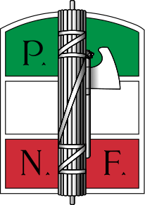
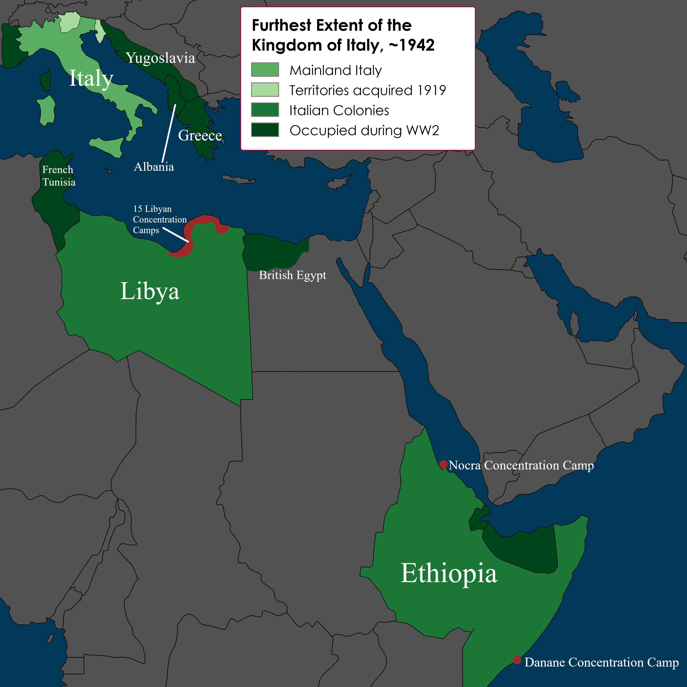

Italian Fascism
Article Home
How to navigate the article
This article is broken into distinct sections. The first main section is in quick information, the map, and the timeline: this is where you will find pure factual dates and information about events. Refer to this section for the "what, when, and where". The second section is multiple written chapters which are designed to be self-contained, and are explicitly historical interpretation - refer to them for the "why and how". Be aware that every chapter - some more than others - contains discussions of extreme violence, racism, genocide, etc. There are some images on the page that may be disturbing - the most graphic of which will be blurred with a description until you click to reveal the photograph if you want to see it.
Contents
Quick Information
|  | |
| Native Language Name: | Partito Nazionale Fascista |
| English Name: | National Fascist Party |
| Abbreviation: | PNF |
| Also called: | Fascists, Italian Fascists, Blackshirts. |
| Years active: | Active from 1919; officially founded 1921; goverened from 1922; dismantled 1945. |
| Historical Significance: |
|
| Government structure: | Leading governmental body was the "Fascist Grand Council" from 1925 onwards. The Grand Council itself was divided into mutliple ministries, corporations, and syndicates. The main leadership was in the president and four selected ministers called the "Quadrumvirs". |
| Significant members | |
| Benito Mussolini (1883-1945): | Party founder, president of the Grand Council from 1922 until death. Shot by a Communist in 1945. Granddaughter a member of Italian parliament for the Forza Italia party. |
| Roberto Farinacci (1892-1945): | Regarded as one of the most extremist antisemites of the party. Member of the Grand Council. Fled Italy in 1943, captured 1945 and executed by Socialists. |
| Guido Landra (1913-1980): | Contributor to the Manifesto of Italian Racism, leader of the Ministry of Race and Demographics from 1938 to 1939. Died of old age. |
| Pietro Badoglio (1871-1956): | Governor of Italian Libya. Perpetrator of Libyan genocide. General and war criminal in Ethiopia. Given protection by the Allies postwar and died of old age. |
| Rodolfo Graziani (1882-1955): | General in Italian Libya. Perpetrator of Libyan Genocide. General and war criminal in Ethiopia. Given protection by the Allies postwar and died of old age. Statue erected in his honor in his hometown in 2012. |
Map of the Kingdom of Italy
{kind=link}
Timeline of Events
| 1814: Italian lands are divided between the Austrian Empire and a series of small Italian kingdoms after the fall of Napoleon's empire. | |
| 1800-1914 | 1848-1866: Italian Independence Wars (Risorgiemento). |
| 1870: The Risorgiemento is completed with the capture of Rome. The Kingdom of Italy is unified with a king as executive and a parliament as legislative. | |
| 1911: the Kingdom of Italy invades and occupies Libya, previously owned by the Ottoman Empire and Sanusiyya Order. | |
| July: Austria invades Serbia; World War One begins. | |
| 1914 | August-December: The Italian Socialists vocally support pacifism. |
| December: Benito Mussolini stops being a Socialist becauase of his support for Italy's entry into the war. | |
| May: Italy joins the Great War on the side of the Entente. | |
| 1915 | August: Benito Mussolini joins the Italian army. |
| Italian Socialist and left-leaning-Catholic parties ("neutralists") protest against the war. | |
| 1916 | |
| August: Benito Mussolini is injured by an artillery explosion and leaves military service. | |
| 1917 | October-November: Italian military disaster at battle of Caporetto. |
| Italy grants Libyan Sanusiyya rebels local autonomy to redirect military resources back to the European front. | |
| 1918 | November: A general ceasefire is called which ends the fighting in World War One. |
| May: Mussolini leads the first gathing of "Fasci" in Italy, made up of nationalist-interventionists across the political spectrum. | |
| 1919 | June: The Treaty of Versailles is signed, which grants Italy minor territorial gains and dismantles the Austrian empire. |
| September: The Italian nationalist Gabriele D'Annunzio invades and occupies the city of Fiume in the Balkans in protest of the Treaty of Versailles not giving Italy more land. | |
| November: The first elections in Italy featuring universal male suffrage. The Italian Socialist Party (PSI) and left-Catholic Italian Popular Party (PPI) win the most votes. | |
| 1920 | The "Red Scare"/"Red Biennial" sees mass Socialist action. Conservatives and Liberals, including the Prime Minister of Italy, react with hostility. |
| December: The Italian government forces the occupation of Fiume to end. | |
| 1921 | November: Mussolini officially organizes the Fasci into the National Fascist Party (PNF). |
| Mussolini also creates the paramilitary "branch" of the PNF, the Fasci Italiani di Combattimento, usually called the blackshirts or squadristi. | |
| The PNF reaches 250,000 members. | |
| 1922 | October: Fascist blackshirts stage a coup in the March on Rome. The king of Italy names Mussolini prime minister. |
| The PNF leads a coalition in parliament with Conservative, Catholic, and Liberal parties. | |
| 1923 | The coalition government reverses the Liberal appeasement policy in Libya; military campaigns against the Libyan Sanusiyya movement resume. |
| Italian elections. The PNF use violence to intimidate politicians out of running and voters out of voting. | |
| 1924 | June: The Italian socialist MP Giacomo Matteoti calls out the blatant Fascist election fraud. He is kidnapped and found murdered months later. |
| Italian Liberals and Socialists form a separate government called the Aventine. | |
| The Aventine creates constoversy within the Fascist party, since there is still a significant portion of the party that does not support dictatorship. | |
| 1925 | Mussolini decides to create a dictatorship. The authority of parliament is superceded by the new Fascist Grand Council. |
| 1926 | |
| 1927 | |
| 1928 | |
| The Italian Army begins forcing Libyan civilians into concentration camps. | |
| 1929 | Mussolini signs the Treaty of Lateran with the Pope, creating the independent Vatican State and granting legal priviliges to Catholic clergy in Italy. |
| 1930 | |
| 1931 | September: The Libyan Sanusiyya leader 'Umar al-Mukhtar is publicly hanged in an Italian concentration camp at the age of 74. |
| 1932 | |
| 1933 | |
| 1934 | Between 1929 and 1934 over 100,000 Libyan civilians were forced into concentration camps. Around 60,000 Libyan people - 2/3rds of those interred - died from starvation, disease, and outright murder. |
| 1935 | October: Italy invades Ethiopia |
| December: Italy uses mustard gas against soldiers, civilians, and members of the Red Cross in Ethiopia. | |
| Italy intervenes in the Spanish Civil War in support of Franco. | |
| 1936 | Italy joins the Axis, allying with Germany and Japan. |
| Italian state propaganda begins an anti-Semitic campaign. | |
| Italy forces thousands of Ethiopians into concentration camps. About half of the population of those interred die while the camps are active. | |
| 1937 | The war in Ethiopia ends. |
| The Fascists pass laws banning interracial marriage. | |
| 1938 | The Fascist Grand Council puts the Manifesto of Italian Racism into law. It enforces discrimination against Africans and Jews. |
| 1939 | September: Germany invades Poland; World War Two begins. |
| 1940 | June: Italy declares war on the Allies, joining World War Two. |
| December: Italian military disaster against the British in Egypt. | |
| 1941 | Spring: Nazi military assistance arrives in Northern Africa. |
| 1942 | October: Axis military disaster forces them to leave Libya, which is occupied by the Allies. |
| The Allies land in Sicily. The Italian Resistance launches a revolution, and Mussolini is forced to flee Rome. | |
| 1943 | The Nazis invade and occupy northern Italy. They begin the Holocaust in Italy. |
| The remaining Axis forces in Africa evacuate or surrender. | |
| 1944 | The Holocaust in Italy kills 7,000 Jews out of the prewar population of around 40,000. |
| April 28th: Mussolini and his mistress are murdered and displayed naked in a town square by members of the Italian Resistance. | |
| 1945 | April 30th: Hitler commits suicide in Berlin. |
| May: the war in Europe ends with the surrender of Germany. | |
| 1946 | The Kingdom of Italy ceases to exist. |
| Nazi war criminals are sentenced in the Nuremberg trials. Italian war criminals go largely unpunished. |
Racism, Antisemitism, and Genocide
Short Summary
The Italian conquests in Africa were heavily influenced by the racist idea that Europeans "should" have a colonial empire. The wars in Africa themselves then came back and influenced the development of Fascist racism in the 1920s and 1930s. To maintain their empire the Fascists justified violence against Africans using white supremacy. While antisemitism had always existed in Italy, it was usually along religious lines rather than "biological" inheritable race. However, as Fascists relied on ideas of race to justify the oppression of Africans, they then used race to justify the oppression of Jews as well. This culminated with the 1938 Manifesto of Italian Racism and the subsequent laws passed by the Fascist Grand Council. Despite the horrific crimes of the Fascist regime many of these atrocities have been under-represented in Italian culture and historical study due to political and cultural stigmas.
Genocide in Libya
Libya had maintained a staunch anti-colonial religious society called the Sanusiyya Order from the late 1800s. When the Italians invaded and occuppied Libya in 1911, they came into immediate conflict with the Sanussi1. Libya was where the Italian government began their racist policies, even before the Fascists took power. The Italians sought to break the power of the Sanusi order by exiling known members of the group, and between 1911 and 1928 exiled around 1,500 people into prison-colonies2. Mussolini's plan to re-create the Roman Empire caused a severe escalation of Italian racism beginning in 1928.
{kind=link}
In 1928 Mussolini ordered the generals in charge of the Libyan campaign - Rodolfo Graziani and Pietro Badoglio - to "pacify" Libya at all costs. Pietro Badoglio considered the population of Libya - mostly rural tribesfolk - to be an acceptable cost. To "pacify" Libya he planned to build concentration camps to hold the entire population of the northeastern region of Libya. In a letter from June 1930 Badoglio said about the plan:
"I do not conceal from myself the significance and the gravity of this action which may well spell the ruin of the so-called subject population."3
The concentration camps began construction in 1928, and ran until 1934. Over that period of time the Fascists forced over 100,000 Libyans into the camps. Death did not begin in the camps, but on forced marches across hundreds of miles of open desert. The herds of Libyan tribespeople were also forced to march; some 80-95% of livestock - which the tribesfolk relied on for food and property - died4. The largest camps had conditions such as a complete lack of medical care, starvation-level rations, and no ability for those interned to wash or get new clothes5. Between 60 and 70 thousand Libyan people died during the genocide6. Hundreds of thousands of other Libyans were also forced to abandon their homes and flee the country.
{kind=link}
The legacy of genocide is still felt in Libya, and largely ignored in Italy. Survivors of the concentration camps, and their children and grandchildren, are alive today. Because of low literacy rates among tribespeople, the genocide is mainly remembered through poetry and oral tradition. This includes epic poems by those interred in camps such as Rajab Hamad Buhwaish al-Minifi's Mabi-Marad (I have no Illness except Agaila Concentration Camp) and Fatima 'Uthamn's Kharabin Ya Watan (Our Homeland Ruined Twice)7. Mabi-Marad was played often on radio stations throughout Libya in the 1950s, and is easily recitable for many Libyans8. The genocide is mostly unknown or ignored in Italy. The Italian government only tacitly accepted responsiblity for atrocities - but not genocide - in Libya as recently as 1998. The General Rodolfo Graziani, known as the "Butcher of Libya", had a statue erected in his honor in his hometown in 2012 dedicated to their "most famous of sons"9.
Development of Racism and Antisemitism in Law
The conquests of Libya and Ethiopia in Africa influenced the development of Fascist racists beliefs and laws back in Italy during the 1920s and '30s.
Historiography
After World War Two, most historians focused on the rise and fall of the Nazi regime in Europe and ignored other Fascist movements within and outside of Europe. This was especially true of Italy for a series of political and cultural reasons. After the war the Italian Communist Party was the strongest Communist party in non-Soviet Europe, and both the US and the UK took that as "good reason" to not weaken the Italian right wing by attacking the Fascist regime10. Italian Fascists remained in charge of the Italian government archives after the end of the war. This allowed them to systematically remove, alter, or destroy documents showing the full extent of atrocities committed by Mussolini's regime11. Additionally, while Nazi officials were tried for their crimes, Italian officials were never tried. This was despite numerous attempts by the governments of Ethiopia and Yugoslavia.
Within Italy, there was a desire to separate the Italian people from the evils of the Fascist regime. This led to the creation of the "Good Italian Myth", which states that most Italians secretly hated Mussolini but felt too threatened to do anything12. In this myth, the people of Italy are framed as innocent victims of the Fascist regimes, rather than perpetrators of the crimes. The Italian government has never felt much need to dispell this myth, especially with the genocides and atrocities committed in African colonies.
Because of this, historians - especially English speaking ones - have only recently began unpacking the nature of hatred in Fascist Italy. Some Italian historians began delving into Fascist anti-Jewish laws in the 1970s. The most comprehensive English book on Italian antisemitism was published in 2014. Only very recently have historians looked into the cases of Ethiopia and especially Libya. The Italian archives continue to be reluctant - at best - to release details on those atrocities13. Essentially the only comprehensive English book on the genocide in Libya written so far was published in 2021. Research on the oppression and ethnic cleansing of people in Fascist Italy is an ongoing process which affects the survivors and descendants of those atrocities today.
Section Citations
- Ahmida, Genocide in Libya, page 23.
- Ahmida, Genocide in Libya, page 62.
- Ahmida, Genocide in Libya, page 60.
- Ahmida, Genocide in Libya, pages 61/2.
- Ahmida, Genocide in Libya, page 61.
- Ahmida, Genocide in Libya, page 3.
- Ahmida, Genocide in Libya, page 63.
- Ahmida, Genocide in Libya, page 67.
- Ahmida, Genocide in Libya, pages 114-115.
- Ahmida, Genocide in Libya, page 114.
- Ahmida, Genocide in Libya, page 9.
- Livingston, The Fascists and Jews of Italy, page 75.
- Ahmida, Genocide in Libya, pages 114/115.
Free, Online Sources
Memoirs
- Garden of the Finzi-Continis by Giorgio Bassani - memoir of an Italian Jew who grew up during the 1930s and 40s. Available on the Open Library Internet Archive.
- Partisan Wedding by Renata Vigano - fictionalized accounts based on the lived experiences of a woman who fought in the Italian resistance. Available on the Open Library Internet Archive.
Sources from historians
- Of the Jewish Race: Race, Law and Identity in Fascist Italy, lectures given by various historians on the subject. 1.5 hours. Watch on YouTube.
- Italian Fascism and the Racial Laws of 1938 by Dr. Patrick Anothony Cavaliere, 20 pages. Hosted on a University Website.
Primary sources
- Mussolini as Revealed in His Political Speeches (November 1914-August 1932) by Benito Mussolini, originally published 1923. Available on Project Gutenberg.
- Readings on Fascism and National Socialism, published by the University of Colorado. A collection of translated writings by Fascists and Nazis, including The Doctrine of Fascism by Mussolini, The Political Doctrine of Fascism by Alfredo Rocco, The Philosophic Basis of Fascism by Giovanni Gentile, and others. Available on Project Gutenburg.
Bibliography
- Ahmida, Ali Abdullatif: Genocide in Libya: Shar, a Hidden Colonial Histori, 2021. ISBN 978-1-003-03177-2.
- Livingston, Michael: The Fascists and Jews of Italy: Mussolini's Race Laws, 1938-1943, 2014. ISBN 978-1-107-02756-5.
Image credits
- PNF Logo from Wikimedia Commons.
- Photo of Fascist cavalry in 1931 from Wikimedia Commons
- Photo of the Abyar concentration camp from Wikimedia Commons.
- Map of Italy adapted in GIMP from the 1938 map of the world by MapChart, liscened under creative commons.
{kind=link}
{kind=link}
{kind=link}